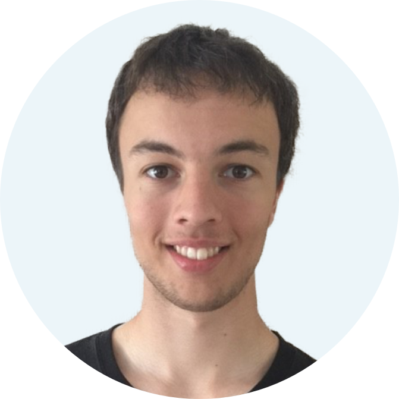
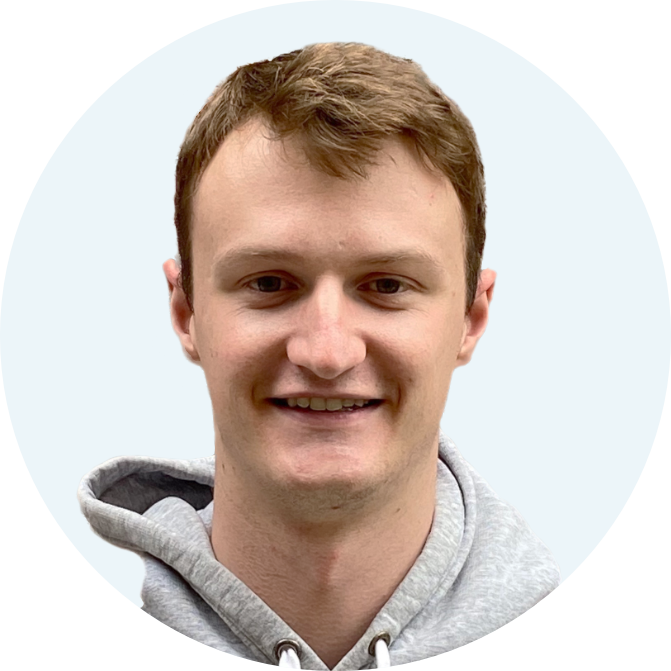

Postdoctoral researchers
Joe Crossley
I'm primarily interested in strongly correlated many-body physics. During my PhD, I focussed on systems of interacting spins on a lattice. I studied the low-temperature thermodynamics of the spin-liquid candidate Ca10Cr7O28 and I explored the utility of the "Path Integral over Tensor Networks" tool applied to spin chains. At Nottingham, I will be working on novel approximations to correlated many-body ground states and on the application of various numerical methods to many-body quantum thermodynamics.
Konstantinos Sfairopoulos
Joint with J.P. Garrahan
I am broadly interested in models with constraints. These include classical stochastic dynamics and large deviations, but also (classical and quantum) spin models. For both of these classes, I am interested in answering questions regarding the character of their phases, their phase transitions, and their dualities. Interests include topological phenomena, in- and out-of-equilibrium dynamics, tensor networks, dynamical facilitation and glasses and constrained satisfaction problems.
Jared Jeyaretnam
Joint with J.P. Garrahan, I. Lesanovsky, and B. Bertini
I am interested in non-equilibrium quantum many-body physics - in particular, ergodicity breaking (where matter taken out of equilibrium fails to thermalise), such as when strong quenched disorder is applied to an interacting system to localise it. I have also recently been studying fragmentation in lattice gauge theories and tensor network methods. At Nottingham, I will be taking these themes and combining them with a quantum circuit perspective.

George Bakewell-Smith
EPSRC Doctoral Prize Fellow
I am interested in the theory of quantum non-equilibrium systems. This involves using statistical techniques to analyse fluctuations of both time-integrated observables and first passage processes, as well as to derive large deviations statements. Currently, I am focused on investigating the advantages of quantum-enhanced dynamical sampling methods, with a view to apply these to study so-called spin glasses.

George McArdle
My general research interests are in many-body physics and non-equilibrium systems. I am currently focused on the realisation of Majorana fermions in heterostructures that give rise to topological superconductivity. Primarily using analytical techniques, I explore how the Majorana fermions arise in vortices and the properties they have, especially those that will allow for their experimental verification, such as their non-Abelian statistics.

Arash Jafarizadeh
My research interests lie specifically in the areas of quantum entanglement, spin chains, and many-body physics. I am interested to know the properties of quantum many-body systems, with a particular emphasis on the role of entanglement in these systems. I investigate the properties of spin chains, such as their ground-state properties and dynamics, and analyze the entanglement properties of these systems using a variety of theoretical and numerical methods.
PhD students
Anna Dalmasso
The main focus of my research is many-body physics, particularly topological systems in (2+1) dimensions. Using both analytical and numerical methods, I investigate the dynamics of anyonic excitations, with the first aim of developing a compact anyon-to-qubit mapping. I am also interested in these systems in the context of topological quantum computing and quantum error correction.
Caitlin Lewis
Jointly supervised with Jonathan Hirst and Katherine Inzani
I completed my undergraduate MSci degree in Chemistry and Molecular Physics at the University of Nottingham. My masters project, conducted within the Hirst group, focused on electronic structure calculations for protein Circular Dichroism. Now, I'm pursuing my PhD with the same group, exploring how quantum computing can enhance quantum chemistry research.

Molly Gibbins
Jointly supervised with Bruno Bertini
My research interests are currently focused on the dynamics of various many-body systems after quenching. My first project in the group is based on the quasiparticle description for entanglement growth. This description provides an exact picture for entanglement in the semiclassical limit and assuming that correlations do not develop between quasiparticles over time. The aim of our project is to extend the above case from previous literature to general translation invariant initial states and to higher spatial dimension.
Previous Postdocs
Luke Causer
2023-2024 EPSRC Doctoral Prize → Oxford Quantum Circuits